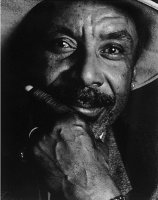
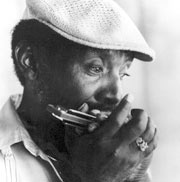
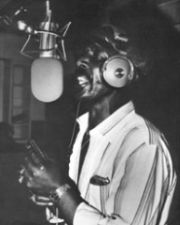

Johnny Dyer, еще один яркий представитель поколения блюзменов, родившихся в 30-х годах, кажется, что именно 30-е дали блюзу самые громкие имена, особенно среди гармошечников.
Официальный сайт: johnny-dyer.home.att.net
Johnny Dyer родился в 1938 году в Stovall Plantation в Rolling Fork, Mississippi, именно там, где когда-то рос со своей бабушкой никто иной, как Muddy Waters.
По воспоминаниям Джонни, свою первую губную гармошку он нашел, тренировался в игре на ней по ночам, прячась от родителей.
В раннем возрасте его кумирами были Sonny Boy Williamson, Big Walter Horton, Little Walter, которых он слушал по радио. Именно под их влиянием создает свою первую группу, в которой он играл на гармошке без усиления. На усиленную гармонику он перейдет в 50-х работая со своим другом Smokey Wilson.

В 1958 году он переезжает в Калифорнию, где перенимает приджазованное звучание таких мастеров West Coast как Johnny Otis, Jimmy Witherspoon и T-Bone Walker.
В Лос-Анджелесе Dyer знакомится с George "Harmonica" Smith - первооткрывателем калифорнийского стиля для блюзовой гармоники. Старший музыкант становится другом и наставником для Johnny, они ведут совместные концерты, представляясь публике, как сын и отец.
В конце 60-х Johnny Dyer формирует свой ансамбль - Johnny Dyer & The Blue Notes. Они открывают выступления для более известных блюзменов. Но в начале 70-х он решает завязать с музыкой.

Возвращение к блюзу произошло после того, как в одном из клубов Лос-Анджелеса Джонни увидел выступление своего земляка - Muddy Waters.
В начале 80-х Johnny Dyer уже снова в строю среди лучших гармошечников Калифорнии - Shakey Jake Harris, Harmonica Fats, Rod Piazza. В 1983 году записывает пару синглов для лэйбла, принадлежащего Shakey Jake Harris. Записывает альбом на малоизвестном лейбле вместе со своим ансамблем.
В конце 80-х выступает вместе с молодым гитарным гением West Coast стиля - Rick Holmstrom, результат - два альбома "Listen Up!" и "Shake It!".
В середине 90-х записывает, пожалуй, свой самый известный альбом - "Jukin'" - дань своему покойному учителю и коллеге - George "Harmonica" Smith.
Константин Колесниченко [aka Wheel]
bluesharp.inkharkov.com